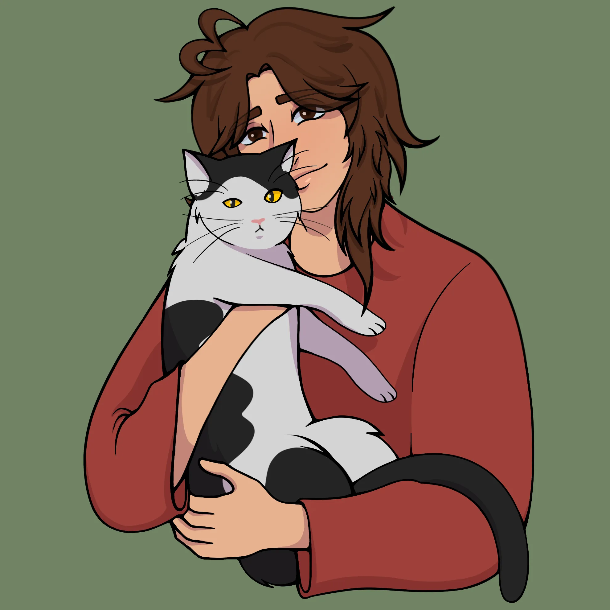

🐸 About Me 🐸
Zoie Firkins | She/Her | 23

Hi! I am Zoie Firkins.
I am currently 23 years old and live in Iowa.
🎱 Interests 🎱
My favorite hobbies include video games, all mediums of art, and programming. I hope to find a job where I can combine my artist skills with my technology skills to create creative, yet practical and functional projects.
💼 Experience 💼
Perfection Learning, Clive— IT Generalist
January 2025-- PRESENT
- Provide hardware and software support across departments
- Maintain user accounts, permissions, and systems access
- Troubleshoot network and workstation issues for staff
- Assist with deployment, maintenance, and documentation of IT systems
- Ensure timely resolution of tickets and escalate complex issues when necessary
Menards, Grimes — Service Desk Worker / Cashier
OCTOBER 2022-- MAY 2025
- Assisted with POS transactions and product returns
- Resolved customer service concerns with professionalism
- Maintained knowledge of store layout to help customers locate items
🎓 Education 🎓
Grand View University, Des Moines- BS
August 2024 - May 2026
Graduated with a Bachleors of Arts in Information Technology.
DMACC, Ankeny— AAS
May 2022 - May 2024
Graduated with an Associates in Computer Information Systems.
🛠️ Skills & Software capabilities 💻
Programming
Java, Python, C#, C++, HTML, CSS, JavaScript, Bootstrap, Front-End Development, Back-EndDevelopment, Object-Oriented Programming.
IT
Technical support, System Administration, Network Administration, Network Security, Project Management.
Developement & Databases
Visual Studio, Eclipse, PyCharm, Atom, GitHub, SQL Developer, MySQL,Oracle VirtualBox.
Design & Productivity
Google Workspace, Microsoft Applications, Adobe Products, Figma, Canva, Procreate, Jira Service Management, NinjaOne.
Other Skills
Fast learner, strong organization, excellentcommunication, adaptable to new technologies, problem solving, customer service.
🪪 Licenses & Certifications 🪪
Career Essentials in System Administration by Microsoft and LinkedIn
Issued Oct. 2026
Career Essentials in Github Professional Certificate
Issued Sep. 2026
Favorites
- Color: Blue
- Animal: Raccoon or Cat
- Game: Night In The Woods
- Genre: Psychological Horror
- Movie: Heathers
- Trilogy: Knives Out
- Anime: Death Note
- Manga: The Summer Hikaru Died
- Band: Peach Pit
- Book: Howls Moving Castle
- Musical: Ride The Cyclone
- Aesthetic: Whimsical Goth
- Cryptid: Mothman
TMI
- Birthday: September 3rd 2003
- Height: 5'4" -> 162cm
- MBTI: INTP-J
- Zodiac: Virgo
- Chinese Zodiac: Goat/Sheep
- Scociotype: ILI-1Te